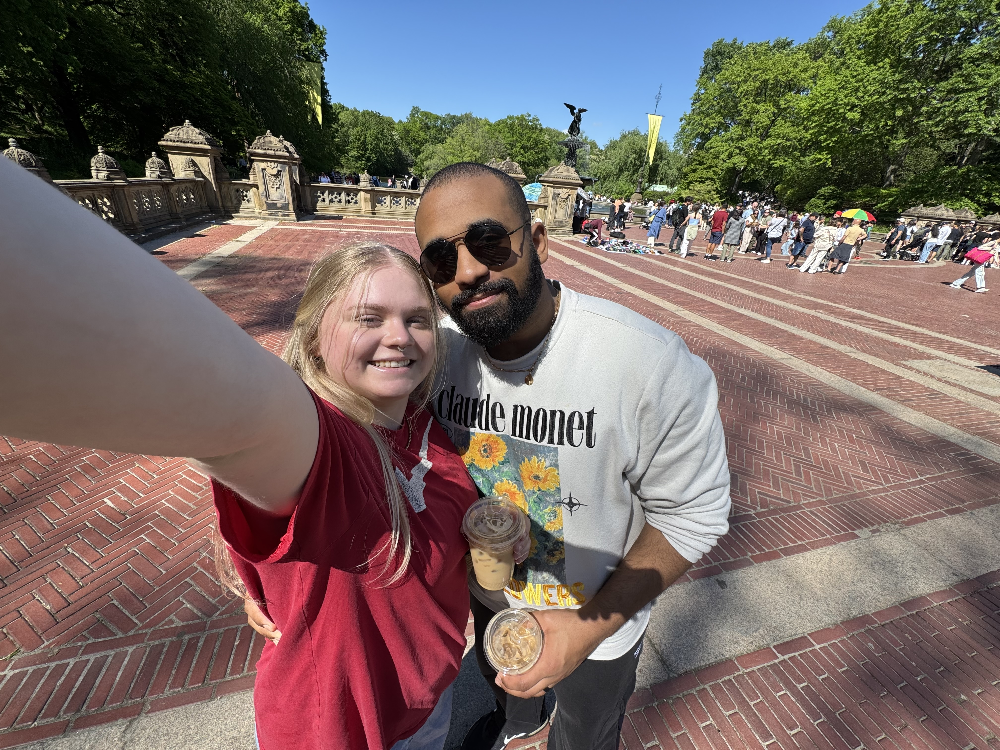

Nice to meet you!
Hello! I'm Erin, a UX designer who seeks empathetic solutions to complex problems. I am a New Jersey native now located in Delaware, studying Human-Computer Interaction at Arizona State University. When I'm not doing that, you can find me on a hiking trail, at my computer, or roaming the aisles of a bookstore.
